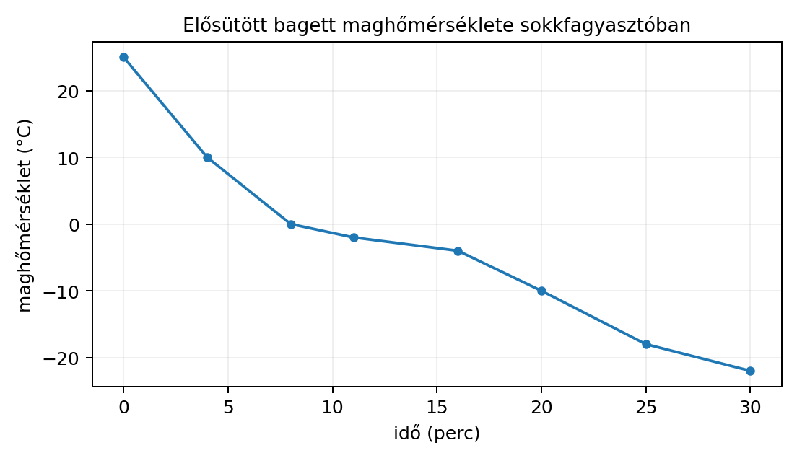

A késztermék melegen csomagolva befülled, a másnapra tervezett péksütemény pedig megszikkad vagy romlik. A hűtés és a fagyasztás ezért nemcsak tárolási kérdés, hanem termelésszervezési eszköz is. A pék akkor használja jól, ha ismeri a termék típusát, a hűtési-fagyasztási sebességet és a felhasználás előtti felolvasztás szabályait.
A sült termék a kemencéből kikerülve gyorsan veszít hőt a felületén, de a bél maghőmérséklete lassabban csökken. Fagyasztás előtt ezért előhűtést alkalmazunk. Az alábbi görbe egy elősütött, majd sokkfagyasztóba helyezett termék belső hőmérsékletét mutatja szemléltető adatokkal.

A görbe meredeksége (a hűtési sebesség) mutatja, hogy a gyorsfagyasztás rövid idő alatt éri el a –18 °C maghőmérsékletet. Figyeljük meg, hogy a görbe −1 és −5 °C között ellaposodik: itt fagy meg a bél vizének nagy része, és a fagyáskor felszabaduló hőt (a víz fagyáshőjét) is el kell vonni, ezért a hőmérséklet alig csökken. Ez a fagyási plató a jégkristály-képződés fő zónája. Minél gyorsabban jut át rajta a termék, annál kisebbek a jégkristályok. Ez azért fontos, mert a lassú fagyasztás során a termék víztartalma nagy jégkristályokká fagy, amelyek roncsolják a bélszerkezetet.
Motiváció. Hajnali sütés után a termékek egy részét az eladótérbe visszük, a másik részét csomagoljuk és hűtőben tároljuk. Ha egy rendelés későbbi időpontra szól, a terméket le kell lassítani, meg kell állítani a romlást és a kiszáradást. A hűtés-fagyasztás nélkül a pék csak közvetlenül a sütés utáni időszakra tudna friss árut adni, és a maradék gyorsan veszteség lenne.
Definíció. A hűtés a termék lehűtése legfeljebb +5 °C-ra (hűtőtér 0–5 °C; pékségi gyakorlatban gyakran szigorúbb, ≤ +4 °C körüli célérték; ellenőrizendő: HACCP-terv). A fagyasztás ezzel szemben a termék maghőmérsékletének a fagyáspont alá csökkentése, gyakorlatban ≤ –18 °C célértékre. A gyorsfagyasztás vagy sokkfagyasztás (blast freezing) olyan hűtési módszer, amely erős hideg levegővel, szabályozott légáramlással és rövid idő alatt éri el a kívánt maghőmérsékletet. A mélyhűtött tárolás során a már lefagyasztott terméket –18 °C alatt tartjuk.
Szabály. A hűtés és fagyasztás nem sterilizál. A mikrobák szaporodását lassítja vagy leállítja, de a hőkezelés előtt jelen lévő spórák, toxinok és vegyi szennyezők nem tűnnek el. A fagyasztott termék felengedtetésekor a mikrobiológiai veszély újból aktívvá válik, ezért a fagyasztás nem helyettesíti a sütést vagy a megfelelő alapanyag-kezelést.
Célok a pékségben. A hűtés-fagyasztás négy fő célt
szolgál:
1. a mikrobiológiai romlás lassítása vagy megállítása,
2. az öregedés (keményedés, vízvándorlás) lassítása,
3. a gyártási csúcsok és a hétvégi/rendelési hullámok
szétválasztása,
4. az elősütött és fagyasztott termékek készletezése a későbbi gyors
kisütéshez.
Higiénia. A fagyasztó nem fertőtleníti a terméket, ezért csak tiszta, a sütés után kihűlt, idegen anyagtól mentes és megfelelően kezelt terméket fagyaszthatunk. A fagyasztott termék kezelésére ugyanazok a személyi higiéniai szabályok vonatkoznak, mint a friss termékre.
Továbbvitt eredmény. A hűtött-fagyasztott termékek csomagolására és jelölésére vonatkozó feltételeket a Csomagolóanyagok és csomagolás alfejezetben használjuk: az itt tanult párazáró csomagolási igény és a terméken feltüntetett tárolási, felolvasztási infó ott válik konkrét jelölési feladattá.
A sütőiparban használt hűtőberendezések feladata eltérő:
Gépbiztonság. A sokkfagyasztó, a hűtőkamra és a fagyasztótér üzemeltetése csak betanítás után, a gépkönyv szerint történjen. A forgó ventilátorba, a hűtőközeg-csövekhez vagy a leolvasztó fűtőbetéthez nyúlni tilos. Tisztítás előtt a berendezést le kell állítani, áramtalanítani és újraindítás ellen biztosítani. A hideg, nedves padlón csúszásveszély van; megfelelő védőcipőt és kesztyűt használjunk.
Megjegyzés. A hűtőgépek elpárologtatója jegesedhet, ezért a gyártói előírás szerinti leolvasztást be kell tartani. A jégréteg rontja a hőelvonást, növeli az energiafogyasztást, és a fagyasztott termékre ráolvadt jég minőségi hibát okoz.
A sütőiparban leggyakrabban három fagyasztási módszerrel találkozunk:
Tárolási paraméterek. A lefagyasztott sütőipari termék tárolása során a hideglánc folytonossága a legfontosabb. Tanulási példaként a következő értékek használhatók:
Előírás. A 852/2004/EK rendelet a hűtőlánc fenntartását írja elő: a hűtést igénylő élelmiszereket a veszélyes hőmérséklettartományon kívül kell tartani. A gyorsfagyasztott élelmiszerek –18 °C-os (vagy hidegebb) maghőmérsékletét és tárolását a gyorsfagyasztott élelmiszerekre vonatkozó uniós irányelv (89/108/EGK) és hazai átültetése, a mélyhűtött tároló hőmérséklet-ellenőrzését a 37/2005/EK rendelet szabályozza (ellenőrizendő: hatályos szövegek, Magyar Élelmiszerkönyv). A fagyasztott termékek csomagolásán és kísérő dokumentációjában a tárolási és felhasználási feltételeket egyértelműen jelezni kell (ellenőrizendő: 1169/2011/EU rendelet és a sütőipari termékekre vonatkozó hazai előírások).
Számítás. Ha egy termék maghőmérséklete a sokkfagyasztóban 25 perc alatt +25 °C-ról –18 °C-ra csökken (a fenti szemléltető görbe szerint), akkor átlagos hűtési sebessége: Az eredmény negatív előjele a hőmérséklet csökkenését jelenti; a gyakorlatban a hűtési sebességet abszolút értékben adjuk meg: 1,72 °C/perc. Ez átlag: a fagyási platón a sebesség ennél jóval kisebb, előtte és utána nagyobb. Ennél sokkal lassabb fagyasztás esetén a jégkristályok nagyobbak lesznek, ezért a gyorsfagyasztó célja a nagy sebesség.
A sütőipari hűtött és fagyasztott termékek felhasználása terméktípusonként eltér:
A felolvasztás szabályai. A legbiztonságosabb módszer a hűtőszekrényben vagy hűtőkamrában, legfeljebb +5 °C-on (üzemi cél ≤ +4 °C) történő lassú felengedtetés. Ekkor a termék felületi hőmérséklete nem emelkedik a veszélyes tartományba, és a belső részek is egyenletesebben engednek fel. A fagyasztott nyers tészta felolvasztása után keleszteni kell, ezért a felengedtetést úgy időzítsük, hogy a tészta ne álljon hosszan melegen.
Tilos. Fagyasztott terméket meleg konyhában, fűtőtesten, közvetlen napsütésben vagy hosszan 5–60 °C közötti hőmérsékleten felengedtetni, mert a felületén a mikrobák gyorsan szaporodhatnak, míg a belső mag még fagyott marad. A vízzel teli edényben áztatás szintén kerülendő, mert rontja a szerkezetet és keresztszennyeződés forrása lehet.
Példa. Egy fagyasztott nyers kakaós csiga tésztáját előző este áttesszük a hűtőkamrába (+3 °C). Reggelre a maghőmérséklet eléri a +1 … +2 °C-ot. A tésztát ezután a kelesztőben kb. 30–32 °C-on, 60–70% relatív páratartalom mellett kelesztjük meg, majd sütjük. A fagyasztóból közvetlenül a kelesztőbe helyezés hibás lenne, mert a felület hamar felengedne, a mag fagyott maradna, és a tészta egyenletlenül kelne.
Allergén. A közös fagyasztóban tárolandó, eltérő allergén összetételű termékeket (pl. tojásos, tejes, diós) zárt, egyértelműen jelölt csomagolásban kell tartani. A fagyasztóban az allergén keresztszennyeződés elsősorban a nem megfelelően fedett termékek és a lecsöpögő folyadék miatt alakulhat ki, ezért a polcokon alulra kerüljenek a nyers, csepegő anyagok, felülre a zárt, sült termékek.
Az alábbi számozott lépéssor egy ellenőrzőlista, amely egy elősütött, fagyasztásra szánt termék (például 90 g-os bagett) gyártási és visszasütési folyamatát írja le. A paraméterek tanulási példák, ezért az üzemi technológiai laphoz igazítandók.
Higiénia. A fagyasztásra szánt terméket csak tiszta kesztyűvel vagy lapáttal fogjuk meg. A sütőből kikerült terméket ne tegyük nedves, szennyezett felületre.
A hűtés-fagyasztás ellenőrzési pontjait az alábbi táblázat szemlélteti. A fagyasztás sült pékárunál jellemzően minőségi vagy GHP-szintű ellenőrzési pont; CCP csak akkor, ha a HACCP-terv így rögzíti (például töltött, hűtést igénylő terméknél). A határértékek tanulási példák, és mindig az adott pékség érvényes HACCP-tervéhez igazítandók (ellenőrizendő).
| Lépés | Veszély | Határ (példa) | Monitoring | Helyesbítés |
|---|---|---|---|---|
| Sütőből kikerült termék előhűtése | mikrobás utószaporodás, páralecsapódás | 25–30 °C alá hűtés időben | hőmérséklet, idő | tovább hűtés, tétel értékelése |
| Gyorsfagyasztás | lassú fagyasztás, nagy jégkristály | maghőmérséklet –18 °C elérése | szonda, idő | fagyasztás folytatása, kisebb tételsűrűség |
| Fagyasztótárolás | hideglánc-megszakadás, kiszáradás, szagfelvétel | –18 °C alatt, párazáró csomagolás | hőmérő, napló, csomagolás | hőmérséklet beállítása, tétel selejtezése |
| Felengedtetés | mikrobás szaporodás, egyenetlen felengedés | hűtőben legfeljebb +5 °C (üzemi cél ≤ +4 °C), időkorlát | hőmérséklet, idő, felület | tétel eltávolítása, felelős döntés |
HACCP. A hűtött és fagyasztott termékeknél a legfontosabb ellenőrzendő paraméterek a hőmérséklet és az idő; a CCP-besorolást a pékség HACCP-terve adja meg (ellenőrizendő). A HACCP-dokumentációban a mért hőmérsékletet, az időpontot, a tételszámot és a beavatkozást egyértelműen rögzíteni kell.
Tünet. Az elősütött és fagyasztott bagett visszasütése után a héj lemezesen leválik, a felület repedezett, a bél belseje tömörödött, a termék száraz.
A tünetet a hibátlan termékkel összevetve ismerjük fel. Az ábra felső bagettjén a héj ép, egyenletesen barnult (1), és a közeli metszeten a bélhez tapad (2). Az alsó, hibás bagetten a héj lemezesen lepattogzik (3), a metszeten rés látszik a héj és a tömörödött bél között (4), a szín pedig foltos, egyenetlen (5).
A héjleválás tehát nem a visszasütésnél keletkezik, csak ott válik láthatóvá: az okot a fagyasztás előtti lépésekben kell keresni. A HTML-kiadásban a „Helyes” és „Hibás” gomb vált a két termék között, a hibás nézet a tipikus okot és a javítást is kiírja.
Lehetséges okok.
- A fagyasztás előtt a termék túlságosan meleg volt, így a héj párát
vett fel és megpuhult.
- A sütés túl rövid ideig tartott az elősütésnél, ezért a héj nem
szilárdult meg.
- A fagyasztás túl lassú volt, vagy a fagyasztóban hőmérséklet-ingadozás
alakult ki.
- A csomagolás nem volt párazáró, vagy a termék fagyási égést
szenvedett.
Ellenőrzés. Mérjük a fagyasztó légtér-hőmérsékletét és a termék maghőmérsékletét. Nézzük meg a fagyasztási naplót: volt-e ajtónyitás, hosszú előtárolás? Vágjuk fel a terméket, és hasonlítsuk össze a bélzetet a frissen sütött, nem fagyasztott kontrollal.
Valós ok és javítás. Tegyük fel, hogy a fagyasztási napló szerint a bagetteket előhűtés nélkül, +45 °C-on tették a fagyasztóba, ezért a felületen páralecsapódás alakult ki, a héj megpuhult, majd a fagyasztóban egyenetlenül fagyott le. A megoldás: a terméket a fagyasztás előtt legalább +30 °C alá kell hűteni, a gyártósort úgy kell időzíteni, hogy ne várjon melegen. A hibás tételt ne értékesítsük.
Megelőzés. Az előhűtést mérjük hőmérővel, a fagyasztási paramétereket rögzítsük a naplóban. A sütőből kikerült terméket rácsra, szellősen tegyük, és ne fedjük le fóliával, amíg meleg.
A hűtési és fagyasztási folyamat nyomon követése egyszerű, de kötelező. A pékségnek legalább a következő adatokat kell rögzítenie:
Szabály. A fagyasztott terméket azonosítható módon, a fogyaszthatósági vagy minőségmegőrzési időt és a tárolási feltételt feltüntetve tároljuk. A hideglánc megszakadása esetén a tételt el kell különíteni, és a felelős minőségügyi vagy üzletvezető dönt a további felhasználásról. A nem megfelelő hőmérsékletű tételt nem szabad automatikusan értékesíteni.
A fagyasztott termék fagyasztóban való tárolása közben a minőséget elsősorban a fagyási égés, a jégkristályok, a szagfelvétel és a csomagolás sérülése jelzi. Felengedtetés után a terméket érzékszervileg vizsgáljuk: a héj legyen ép, a bél rugalmas, az íz ne legyen dohos, keserű vagy idegen. Az elősütött fagyasztott termék visszasütése után a térfogat, a héj színe és a bélzet nedvessége közelítse meg a frissen sütött terméket. A fagyasztott nyers tészta felengedtetése után ne legyen ragacsos, folyós vagy szakadó, és a kelésnek indulnia kell.
A válaszok a Megoldások elején találhatók.
1. feladat (A) Sorolja fel a hűtés és fagyasztás négy fő célját a pékségben, és magyarázza el, miért nem sterilizál a fagyasztás.
2. feladat (A) Egy elősütött termék maghőmérséklete a sokkfagyasztóban 15 perc alatt +28 °C-ról –18 °C-ra csökken. Számítsa ki az átlagos hűtési sebességet °C/percben.
3. feladat (B) Egy pékség 60 darab, egyenként 120 g-os elősütött zsemlét fagyaszt le. A fagyasztóban a termékek párazáró zsákokban, 3 fóliatálcában kerülnek tárolásra. A tálcánkénti maximális terhelés 3 kg. Elhelyezhető-e ez a mennyiség 3 tálcán? Válaszát számítással indokolja.
4. feladat (B) Egy fagyasztott nyers fonott kalács tésztája előző este bekerül a hűtőkamrába (+3 °C), reggelre a maghőmérséklet +1 °C. Ismertesse a következő lépéseket a kelesztőbe helyezésig, és nevezze meg a HACCP ellenőrzési pontot a felengedtetés során.
5. feladat (C) Egy üzemben a fagyasztott bagett visszasütése után a héj repedezett, a bélzet alján tömör réteg látható. A hőmérsékleti napló szerint a fagyasztótér –18 °C, a sütő hőmérséklete 200 °C. Mi lehet a hiba oka? Tegyen fel két ellenőrző kérdést, és javasoljon megelőző intézkedést.
6. feladat (D) Tervezze meg egy elősütött, fagyasztott kifli felhasználásának lépéseit a fagyasztóból kivételtől a kisütésig. Adja meg minden lépésnél a mérendő vagy ellenőrzendő paramétert, és jelölje meg, hol van a kritikus pont a folyamatban.
Önellenőrzés – válaszok
1. Hamis: a fagyasztás gátolja a mikrobák szaporodását, de nem pusztítja
el őket; a spórák és egyes toxinok megmaradnak.
2. A meleg termék felületén páralecsapódás képződik, a héj megpuhul, a
fagyasztóban jégpáncél keletkezik, a termék visszasütve repedezik.
3. A gyorsfagyasztás célja a ≤ –18 °C maghőmérséklet elérése.
4. Hűtőben (legfeljebb +5 °C, üzemi cél ≤ +4 °C) lassú felengedtetés,
majd kelesztőben megkelesztés, végül sütés.
5. A FIFO jelentése: előbb be, előbb ki; a régebbi tételt kell előbb
felhasználni.
6. A felengedtetési hőmérséklet és idő, valamint a termék felületi
állapota az ellenőrzendő pont (CCP-vé csak a HACCP-terv szerint
válik).
1. feladat (A) megoldás
A hűtés-fagyasztás célja: a mikrobiológiai romlás lassítása/leállítása,
az öregedés (keményedés) lassítása, a gyártási kapacitás időbeli
szétválasztása, valamint az elősütött termékek készletezése a későbbi
gyors kisütéshez. A fagyasztás nem sterilizál, mert a hideg csak gátolja
a mikrobák anyagcseréjét, de nem öli meg a spórákat; a hőkezelést nem
pótolja.
2. feladat (A) megoldás
Adott: kezdeti hőmérséklet +28 °C, véghőmérséklet –18 °C, idő 15 perc.
Keresett: átlagos hűtési sebesség. Képlet:
Behelyettesítve:
Abszolút értékben 3,07 °C/perc.
Ellenőrzés: a hőmérséklet 46 °C-ot csökkent 15 perc alatt, ami
percenként kb. 3 °C, reális.
3. feladat (B) megoldás
Adott: 60 darab × 120 g = 7200 g = 7,2 kg. A 3 tálca maximális terhelése
3 × 3 kg = 9 kg. A 7,2 kg < 9 kg, tehát elhelyezhető. Ellenőrzés: 60
× 0,12 = 7,2 kg. A tálcák száma elég, de a termékeket polconként
egyenletesen kell elosztani a légáramlás miatt.
4. feladat (B) megoldás
A fagyasztott nyers kalácsot a hűtőkamrából (+3 °C) kivéve ellenőrizzük
a maghőmérsékletet (+1 °C körül). Ezután a tésztát kelesztőkocsira
helyezzük, majd a kelesztőben a technológiai lap szerint (pl. 32 °C, 70%
relatív páratartalom) kelesztjük. A HACCP ellenőrzési pont a
felengedtetés hőmérséklete és időtartama: a tészta felülete ne maradjon
hosszan 5–60 °C között, mielőtt eléri a kelesztési hőmérsékletet.
5. feladat (C) megoldás
A héjrepedés és tömör bélzet oka lehet, hogy a bagettet fagyasztás előtt
nem hűtötték elő eléggé, vagy az elősütés túl rövid volt, illetve a
fagyasztó hőmérséklete ingadozott. Ellenőrző kérdések: Milyen volt a
termék maghőmérséklete a fagyasztóba helyezéskor? Változott-e a
fagyasztótér hőmérséklete a tétel alatt, és mennyire volt párazáró a
csomagolás? Megelőzés: az előhűtést hőmérővel igazolni kell, a
fagyasztási naplóban a betárolási hőmérsékletet és a fagyasztási időt
rögzíteni kell, és a sütési elősütöttségi fokot szabványosítani
kell.
6. feladat (D) megoldás
Lépések:
1. Kivétel a fagyasztóból: ellenőrizzük, hogy a csomagolás sértetlen, a
termék –18 °C alatt volt.
2. Felengedtetés (ha a technológia előírja): hűtőben +3 °C-on, időben
korlátozva.
3. Sütőbe helyezés: előmelegített kemence 190–210 °C, a fagyasztott
kiflit közvetlenül tesszük be, ha a gyártói utasítás ezt engedi.
4. Sütés: a bélmaghőmérséklet eléri a technológiában előírt értéket
(például 96 °C).
5. Hűtés, csomagolás, jelölés: a kész terméket rácsra tesszük, majd a Csomagolóanyagok és csomagolás és a Szeletelés, csomagológépek és jelölés alfejezet
szerint tovább kezeljük.
Az ellenőrzési pont a fagyasztóból kivételt követő felengedtetés és a
visszasütés maghőmérséklete (a végén legalább 96 °C; CCP-besorolás a
HACCP-terv szerint).
A sütőipari hűtés és fagyasztás célja a termék romlásának és öregedésének lassítása, a gyártás ütemezése és az elősütött termékek készletezése. A hűtés legfeljebb +5 °C-on (üzemi cél ≤ +4 °C), a fagyasztott tárolás –18 °C alatt történik. A sokkfagyasztó gyors, erős hideg levegővel éri el a ≤ –18 °C maghőmérsékletet, így a jégkristályok kicsik maradnak. A lassú fagyasztás, a hőmérséklet-ingadozás és a nem párazáró csomagolás jégkristály-károsodást, fagyási égést és héjrepedést okoz. A felengedtetés legbiztonságosabb módja a hűtőben, +2 … +4 °C-on történő lassú felengedtetés; a fagyasztott nyers tésztát ezután kelesztőben kelesztjük. A gyorsfagyasztás, a fagyasztótárolás és a felengedtetés hőmérséklete és időtartama ellenőrzési pont (jellemzően GHP-/minőségi pont; CCP csak a HACCP-terv szerint). A dokumentációban rögzíteni kell a hőmérsékleteket, a tételszámot és a naplózott ellenőrzéseket. A csomagolás párazáró, a terméket azonosítható jelöléssel, FIFO-szerint tároljuk. Továbbvitt eredmény. A lefagyasztott termékek csomagolására, jelölésére és a fogyasztói tájékoztatásra vonatkozó követelményeket a Csomagolóanyagok és csomagolás alfejezetben alkalmazzuk.